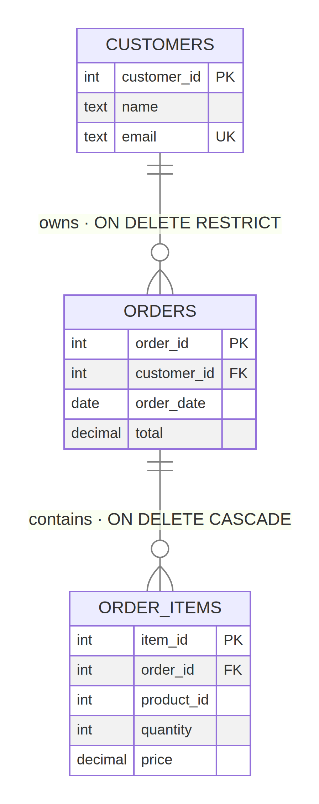

PROJECT-ENGINEERING · CHALLENGE 6
Deletion Consequences
Choosing safe foreign-key deletion rules for an e-commerce system.
The design contains customers, orders, and order items. The schema deliberately uses two different deletion strategies based on the business meaning of each relationship.
RESTRICT
Customer → Orders
Protects financial history from accidental deletion.
CASCADE
Order → Items
Removes child line items that have no meaning alone.

IMPLEMENTATION
PostgreSQL schema
Each entity has a primary key. The two foreign keys encode the required deletion behavior explicitly.
CREATE TABLE customers (
customer_id INT PRIMARY KEY,
name TEXT NOT NULL,
email TEXT NOT NULL UNIQUE
);
CREATE TABLE orders (
order_id INT PRIMARY KEY,
customer_id INT NOT NULL,
order_date DATE NOT NULL,
total DECIMAL(10, 2) NOT NULL CHECK (total >= 0),
CONSTRAINT fk_orders_customer
FOREIGN KEY (customer_id) REFERENCES customers(customer_id)
ON DELETE RESTRICT ON UPDATE CASCADE
);
CREATE TABLE order_items (
item_id INT PRIMARY KEY,
order_id INT NOT NULL,
product_id INT NOT NULL,
quantity INT NOT NULL CHECK (quantity > 0),
price DECIMAL(10, 2) NOT NULL CHECK (price >= 0),
CONSTRAINT fk_items_order
FOREIGN KEY (order_id) REFERENCES orders(order_id)
ON DELETE CASCADE ON UPDATE CASCADE
);
Indexes
idx_orders_customer_ididx_order_items_order_id These support the two relationship lookups without changing deletion semantics.
BEHAVIOR TEST
What happens on delete?
Customer 1 → REJECTEDAlice has orders 101 and 102. Deleting her would destroy transaction history, so the database blocks the operation.
DELETE FROM customers WHERE customer_id = 1;
ERROR: update or delete on table "customers" violates foreign key constraint
"fk_orders_customer" on table "orders"
↓
Customer 2 → ACCEPTEDBob has no orders, so deleting him does not orphan or erase any business record.
DELETE FROM customers WHERE customer_id = 2;
DELETE 1
↓
Order 101 → ACCEPTED + CASCADEItems 1001 and 1002 are deleted automatically with the order. Order 102 and item 1003 remain.
DELETE FROM orders WHERE order_id = 101;
DELETE 1
-- order_items for order_id 101: 2 → 0
DECISION LOGIC
Why these rules?
1
RESTRICT protects records of value
Orders are financial transactions. They support accounting, refunds, audit trails, retention policies, and customer service. A customer can be archived or anonymized later, but a live order history should not disappear because a parent row was deleted.
2
CASCADE cleans compositional children
An order item is a component of an order. Without its parent order, the line has no meaningful lifecycle or reporting context. Cascading prevents orphan rows and keeps cancellation or test-data cleanup atomic.
Decision rule
Use RESTRICT when deleting the parent could destroy business, legal, or financial history. Use CASCADE when the child is wholly owned by the parent and has no independent meaning.
Operational alternative
Production systems commonly pair RESTRICT with archival or soft deletion. That preserves history while allowing account lifecycle management. The important point is to make the loss decision explicit rather than leaving orphan behavior to chance.
SUBMISSION EVIDENCE
Verification summary
3
tables with primary keys
2
foreign keys with explicit rules
1
customer deletion blocked when history exists
2
order items removed by one cascade
Reproducible test
python3 scripts/verify_deletions.py
customer 1 delete: rejected by RESTRICT
customer 2 delete: accepted because it has no orders
order 101 delete: accepted; its 2 items removed by CASCADE
verification passed
Deliverables
schema.sqlcorrected_erd.pngChanges.mdverify_deletions.py
Repository: public implementation repository
Video: narrated walkthrough with schema and deletion tests